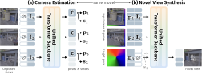
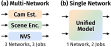
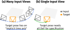
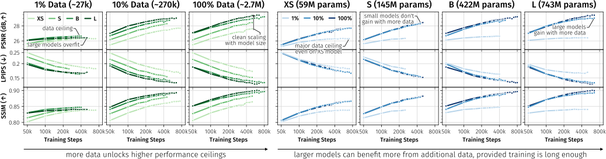
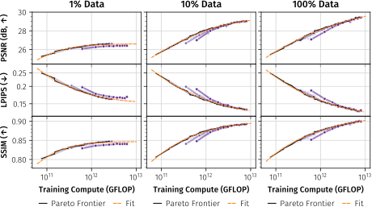
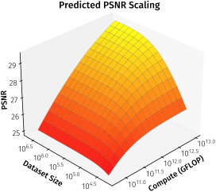

RayDer: Scalable Self-Supervised
Novel View Synthesis
from Real-World Video
*Equal contribution
Zero-shot qualitative video samples on DL3DV-10K.
TL;DR
Self-supervised novel view synthesis methods are fundamentally data-limited: they require static-scene training data, which is scarce. RayDer removes this bottleneck by enabling stable training on general, dynamic real-world video. By consolidating three separate networks into one unified transformer, introducing dynamic state prediction with dropout, and improving pose learning through autoregressive training, RayDer's performance scales predictably with data, model size, and compute – following power-law scaling relationships (R² > 0.99) analogous to those observed in LLMs.
In-the-Wild Comparisons
General self-supervised NVS on in-the-wild scenes. E-RayZer (left) vs. RayDer (right).
Method
Starting from RayZer – three separate ViTs for camera estimation, scene reconstruction, and rendering, trained on static-scene video – we identify and address three scaling bottlenecks:
Data. Existing methods require static scenes, severely limiting data scale. Training on dynamic video causes instabilities as the model is forced to hide scene dynamics inside the pose representation. We resolve this via a train-time per-view dynamic state embedding, with random dropout at training time, eliminating all training divergence.
System. We consolidate all three networks into a single unified model with two modes (camera/state estimation and NVS), conditioned on token role via adaptive norms. A factorized attention pattern enables KV caching → efficient NVS.
Quality. Random-order autoregressive training over views prevents frame-order pose shortcuts, improving both camera estimation and NVS quality. Shallow high-resolution neighborhood-attention layers around the inner backbone add high-frequency detail at minimal cost.



Scaling Behavior
By enabling stable training on general videos, RayDer allows studying scaling behavior across multiple orders of magnitude in both data and model size. We train at four model scales on three dataset fractions of SpatialVid: 1% (~27k videos), 10% (~270k, matching the combined size of commonly used static-scene NVS datasets), and 100% (~2.7M).
Both data and model scaling consistently lead to improvements, provided neither is a bottleneck. Large models overfit on small data, and small models saturate early – scaling neither compute nor data alone is sufficient.



Qualitative Scaling
RayDer's qualitative behavior follows the trends seen in quantitative evaluations: jointly increasing data and compute improves NVS quality, with larger models on more data producing sharper, more detailed novel views.

Results
Open-set Novel View Synthesis
We train a single RayDer model on generic data and evaluate it zero-shot across six diverse datasets, camera baselines, and numbers of input views. Unlike supervised baselines, RayDer uses its own predicted camera poses at inference – not ground-truth annotations – making this a strictly harder setting.
| Method | Params | Self-sup. | LLFF | CO3D | WildRGBD | Mip360 | T&T | ||||||||||||
|---|---|---|---|---|---|---|---|---|---|---|---|---|---|---|---|---|---|---|---|
| 1-view | 3-view | 1-view | 3-view | 3-view | 6-view | 6-view | 3-view | 6-view | |||||||||||
| Method | Params | Self-sup. | Small viewpoint | Large viewpoint | |||||||||||||||
| LLFF | DTU | CO3D | WildRGBD | Mip360 | T&T | CO3D | WildRGBD | Mip360 | T&T | ||||||||||
| 1-view | 3-view | 1-view | 3-view | 1-view | 3-view | 3-view | 6-view | 6-view | 1-view | 1-view | 1-view | 3-view | 1-view | 3-view | 3-view | 6-view | |||
| MVSplat | 12M | ✗ | 11.23 | 12.50 | 13.87 | 15.52 | 12.52 | 13.52 | 14.56 | 12.54 | 13.56 | 13.22 | — | — | — | — | — | — | — |
| DepthSplat | 354M | ✗ | 12.07 | 12.62 | 14.15 | 16.24 | 13.23 | 13.77 | 15.93 | 14.23 | 14.01 | 14.35 | 10.42 | 9.35 | 13.53 | 10.49 | 12.54 | 9.78 | 10.12 |
| ViewCrafter† | 1.4B | ✗ | 10.53 | 13.52 | 12.66 | 16.40 | 18.96 | 14.72 | 16.42 | 12.66 | 14.59 | 18.07 | 10.11 | 9.12 | 13.45 | 9.79 | 10.34 | 9.88 | 10.32 |
| SEVA† | 1.3B | ✗ | 14.03 | 19.48 | 14.47 | 20.82 | 18.40 | 19.25 | 19.75 | 18.91 | 16.70 | 15.16 | 15.30 | 14.37 | 17.28 | 12.93 | 15.78 | 12.65 | 13.80 |
| Kaleido†‡ | 3.1B | ✗ | 15.34 | 20.71 | — | — | — | — | — | — | 18.03 | — | — | — | — | 13.74 | 16.78 | 13.20 | 14.61 |
| E-RayZer* | 246M | ✓ | 10.44 | 18.01 | 10.31 | 16.97 | 12.94 | 17.76 | 17.72 | 16.18 | 15.86 | 10.36 | 12.94 | 10.53 | 14.47 | 9.78 | 15.17 | 12.88 | 13.35 |
| RayDer-L (Ours) | 743M | ✓ | 17.11 | 21.38 | 16.01 | 17.92 | 21.10 | 19.09 | 20.07 | 17.23 | 16.25 | 18.74 | 16.84 | 14.55 | 15.97 | 14.96 | 15.85 | 13.59 | 13.81 |
PSNR↑ (higher is better). RayDer uses its own predicted poses, not GT annotations. Bold = best, underline = second best. †Diffusion-based. ‡Evaluates at 512² instead of 576². *Multi-dataset checkpoint.
Static vs. Dynamic Training Data
Despite evaluation being performed on static scenes, training on more (partially dynamic) video empirically outweighs the benefit of a cleaner, domain-aligned training distribution.
| Training Data | PSNR↑ | LPIPS↓ | SSIM↑ |
|---|---|---|---|
| Static Mix only (~250k) | 28.68 | 0.158 | 0.888 |
| SpatialVid only (~2.7M) | 29.38 | 0.135 | 0.899 |
| Static Mix + SpatialVid | 29.42 | 0.136 | 0.901 |
All models are RayDer-L trained for 500k steps. Evaluated on RE10K.
Self-supervised vs. Supervised on Dynamic Data
Self-supervised RayDer outperforms LVSM trained with pseudo-GT poses from MegaSaM by +2.9 dB PSNR, despite not using any pose supervision. Obtaining the pseudo-GT annotations is an order of magnitude more expensive in GPU-hours than training either NVS model.
| Method | GT Pose | PSNR↑ | LPIPS↓ | SSIM↑ |
|---|---|---|---|---|
| LVSM (SpatialVid) | ✓ | 25.44 | 0.184 | 0.729 |
| RayDer-B (SpatialVid) | ✗ | 28.35 | 0.151 | 0.879 |
Evaluated on RE10K. Both models trained on SpatialVid at matched settings (transformer size, view count, training steps).
Pose Transferability
RayDer learns transferable camera poses comparable to the specialized XFactor method – despite using a simpler, single-stage training setup with no explicit pose transfer supervision – a notable improvement over RayZer, whose pose representations were shown to lack transferability.
| Method | R@10°↑ | R@20°↑ | R@30°↑ | T@10°↑ | T@20°↑ | T@30°↑ |
|---|---|---|---|---|---|---|
| RayZer | 0.48 | 0.61 | 0.88 | 0.12 | 0.32 | 0.44 |
| XFactor | 0.93 | 0.97 | 0.99 | 0.55 | 0.83 | 0.90 |
| RayDer-L (Ours) | 0.92 | 0.98 | 0.99 | 0.44 | 0.83 | 0.90 |
Pose transferability (TPS metric) on DL3DV-10K following the protocol of XFactor. Bold = best, underline = second best.
Qualitative Results

BibTeX
@article{prestel2026rayder,
title = {RayDer: Scalable Self-Supervised Novel View Synthesis from Real-World Video},
author = {Prestel, Ulrich and Baumann, Stefan Andreas and Stracke, Nick and Ommer, Bj{\"o}rn},
journal = {arXiv preprint},
year = {2026}
}